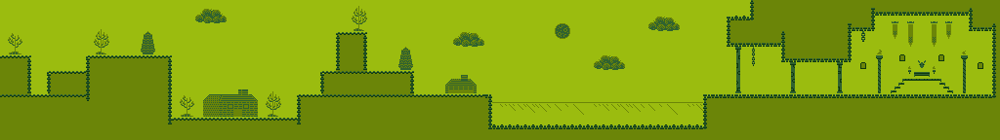
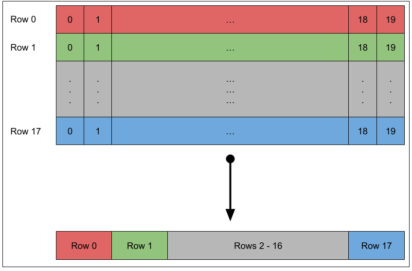
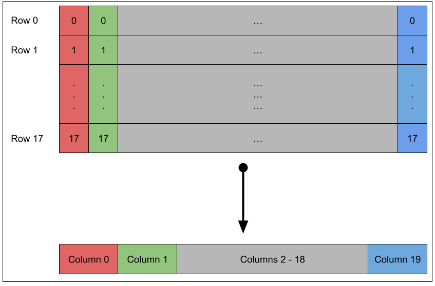

Level Streaming on the Game Boy
Published on 2026-09-20
This article shows how to stream a level in a sidescrolling game, a bit like Super Mario Land would do. I will assume you have a good grasp of basic Game Boy programming concepts, such as vblank, VRAM, tileset, and tilemaps. If you need a refresher, please check my book Game Boy Coding Adventure.
We will start by explaining why we need to stream levels. Next, we'll cover the graphics data organization we'll use for the streaming system. Then, we'll see how to compute which data is required in VRAM on any given frame. Finally, we'll see how and when to copy that data to VRAM, so that the graphics render correctly and timely to the LCD.
By the end of the article, you will have a good grasp of the steps required to implement a basic level streaming system on top of which you can add the features required for your game.
The Need for Streaming
The Game Boy screen displays 160x144 pixels of a background tilemap that is 256x256 pixels, i.e. 32x32 tiles. Any level larger than a tilemap cannot be stored all at once in VRAM. To counter this size limitation and create the smooth sidescrolling of a large level, we must use the tilemap as a ring buffer, continuously writing new columns of level tile indices just before they get displayed to the LCD. This technique is called level streaming and many commercial games implement it, including very early games such as Super Mario Land. The effect is shown in Figure 1, which is a video of the sample we use in this article.
The level is scrolled right at a pace of 2 pixels per frame first, then scrolled back left at the maximum speed of 8 pixels per frame. The joypad LEFT and RIGHT button are used to scroll, while the scrolling pace can be controlled by using the joypad UP and DOWN button. The full code of the sample is available on GitHub. This article uses snippets of code of the most relevant part of the sample only. Figure 2 shows the full 1024x144 level.

The sample streams that level into the Game Boy VRAM, column by column, to create the same side scrolling effect as in Super Mario Land.
Streamed Data Organization
Usually, the indices of a tilemap are exported in what we call row-order, as shown in Figure 3 for a tilemap of size 20x18.

Rows of 20 tile indices are exported in order to the binary file. The final binary files contains 18 rows of 20 tile indices. However, because the sample is going to stream the level one column at a time, we export the indices in column–order instead. Figure 4 shows the same 20x18 tilemap export column per column.

Columns of 18 tile indices are exported in order to the binary file. The final binary files contains 20 columns of 18 tile indices. In the sample, we use a 1024x144 pixels tilemap, or 128x18 tiles. So, the exported binary file contains 128 columns of 18 tile indices.
While it is possible to use row-order, we’ll see later in this article that it comes at a performance cost during vblank that is not negligible. To export the data, we use gconv, which is part of gbtools, because it already supports exporting tiles in custom orders. You can always use another converter or write your own custom one. The technique explained in this article only assumes that the tilemap data is in column-order.
The graphics of Figure 2 are imported in the ROM as shown in Listing 1.
section "graphics_data", rom0 ; Background tileset level_chr: incbin "level.chr" level_chr_end: assert level_chr_end - level_chr < 4 * 1024, "Too many tiles in tileset (maximum 256 tiles)" ; Tilemap columns level_idx: incbin "level.idx" level_idx_end:
First, all the tiles are included in the ROM. We make sure we don’t go over 256 tiles here, because the sample is made for the original Game Boy. You could however use up to 512 tiles on Game Boy Color. Then, the indices are included in the ROM. Remember that these indices are organized in columns of 18 indices. The first 18 indices correspond to the first 8x144 strip of Figure 2 from the left, the next 18 indices correspond to the second 8x144 strip, etc.
At all times, there is always be at least 21 columns available in the VRAM, because even though the screen is 20 columns-wide, there could be partial columns displayed on the left and right sides of the screen, briging the visible columns count to 21, i.e. 2 partial columns and 19 full columns in the middle. At initialization time, all the tiles are copied to VRAM. Then, the first 21 columns of the tilemap are copied to cover the area visible on the LCD when the sample boots.
Let's move on to actually streaming the data into VRAM as the scroling occurs.
Checking Whether Streaming is Required
Now that all the data is in the ROM, let's move on to the first steps of the streaming system, which is to check whether we need to stream a column or not. To perform the check, we use two variables, the current scrolling position and the previous scrolling position, as shown in Listing 2.
def WRAM_POSITION_X rb 2 def WRAM_PREVIOUS_POSITION_X rb 2
The current position, WRAM_POSITION_X, is a 16-bit integer that tracks the scrolling inside the 1024x144 pixel tilemap.
Its value is kept between 0 and 864 (1024 -160) to make sure the system never tries to display a column that does not exist in the ROM.
The previous position, WRAM_PREVIOUS_POSITION_X, is just a copy of the current position of the previous frame.
To check whether we need to stream a column, we compare the column of the current position to the column of the previous position. The corresponding code is shown in Listing 3.
Load16 hl, WRAM_POSITION_X Load16 de, WRAM_PREVIOUS_POSITION_X ld a, l and a, $F8 ld b, a ld a, e and a, $F8 cp a, b jp z, .stream_column ; stream a column .stream_column
To compute the column from a position, we can divide the position by 8.
We could divide both WRAM_POSITION_X and WRAM_PREVIOUS_POSITION_X by 8, then compare their values.
However, we can take a couple of shortcuts here, to save some cycles.
First, we only care about whether the column numbers are equal or not.
The numbers themselves are irrelevant, so we don't need to perform the actual division.
We just need to make sure the comparison works the same as if we had done the division.
Second, the column numbers will only ever be equal or have a difference of -1 or 1.
That is, if the current position column is 10, the previous position column will either be 9, 10, or 11.
So, any difference will be reflected in the low bytes of the 16-bit integers, and the high bytes are irrelevant for the comparison.
Based on these two facts, instead of dividing the 16-bit integers, we can just mask the 3 lower bits of their low bytes (skip the division), and then, we only compare the low bytes (skip using the high byte).
This saves a lot of cycles.
If the column numbers are the same, then we don't need to stream a column.
If the column numbers differ, then we must determine which column must be streamed into which position in VRAM.
Emitting a Column Streaming Request
Handling a Column Streaming Request
def WRAM_COLUMN_COPY_SOURCE rb 2 def WRAM_COLUMN_COPY_DESTINATION rb 2
; Check if there is any request (source is not $0000) Load16 de, WRAM_COLUMN_COPY_SOURCE ld a, d or a, e jr z, .column_request ; Copy the requested column Load16 hl, WRAM_COLUMN_COPY_DESTINATION call CopyColumn ; Clear the request xor a ld [WRAM_COLUMN_COPY_SOURCE + 0], a ld [WRAM_COLUMN_COPY_SOURCE + 1], a .column_request
CopyColumn:
ld bc, SCRN_VX_B
rept SCRN_Y_B
ld a, [de]
inc de
ld [hl], a
add hl, bc
endr
ret
TODO - we update a position based on input and we clamp it to the interval [0~1456] - the budget inside the vblank for copying the 18 indices of a column. - the maximum displacement of 8 pixel horizontally, and the necessity to copy more indices eventually. - vertical scrolling (reverse hl and de roles). - the organization in columns as a way to use “inc de” and “add hl, de” - the importance of keeping work in vblank short (for sprite work) and preparing during the frame. - naive division and multiplication for "x / 8 * 18" versus optimized version. - compute performance of copying a single column.
Conclusion
In this article, we covered a technique to stream levels in the context of a sidescrolling game. You should now have a good grasp of how to use a tilemap and horizontal scrolling to create a ring buffer to stream columns of tilemap indices.
Using the same technique, you could also implement a vertically scrolling level, such as those used in a shmup, streaming rows of indices instead of columns. You could even extend the streaming system to handle both horizontal and vertical streaming. This will consume more time in your vblank, but it is completely realistic to stream both a row and a column inside a single vblank, especially if you use the double speed mode on the Game Boy Color.
Level streaming in Game Boy games is a strict technical necessity forced by the console's severe hardware limits rather than a modern design choice. Because the Game Boy's Picture Processing Unit allocates a fixed background tilemap in VRAM of just 32x32 tiles (256x256 pixels) while the visible screen is 20x18 tiles (160x144 pixels), any level larger than a single static screen physically cannot exist in video memory all at once. To create continuous scrolling, developers use the tilemap as a ring buffer, continuously writing new rows or columns of tile indices to the seam just ahead of the camera before it rolls into view. Doing this dynamically is further constrained by the strict 1140 cycles VBLANK window per frame, which is the only safe time to update VRAM without corrupting the display, making it impossible to load large chunks of map data at once.TODO - the budget inside the vblank for copying the 18 indices of a column. - the maximum deplacement of 8 pixel horizontally, and the necessity to copy more indices eventually. - vertical streaming. - the organization in columns as a way to use inc. - the importance of keeping work in vblank short (for sprite work) and prepare during the frame. - naive division and multiplication for "x / 8 * 18" versus optimized version. - compute performance of copying a single column.
Art Attribution
The background tileset used in the sample is from VEXED. The font is from Off The Books.